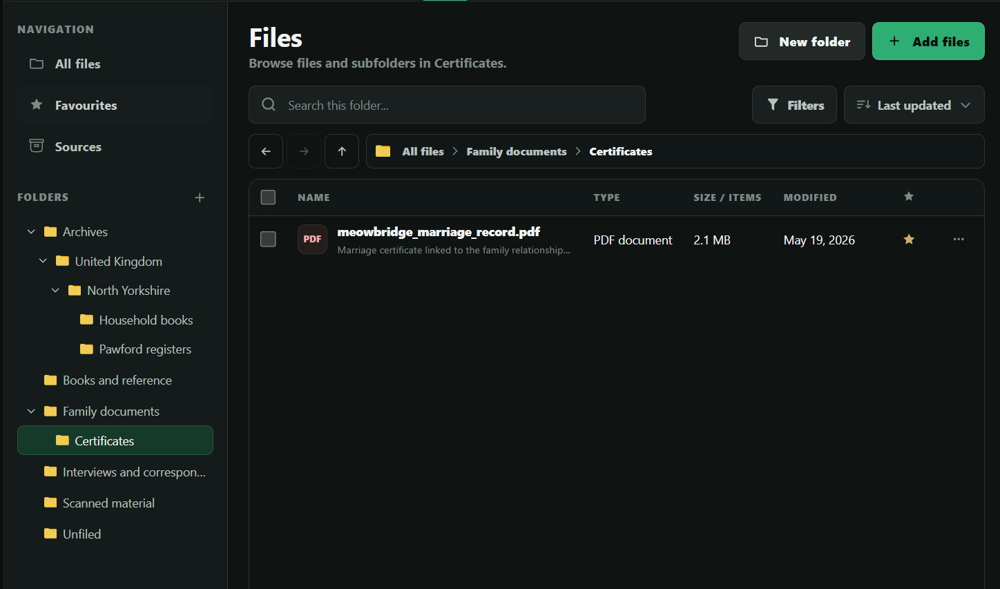
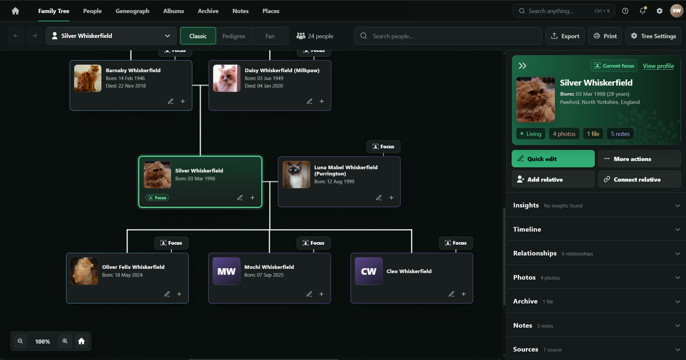
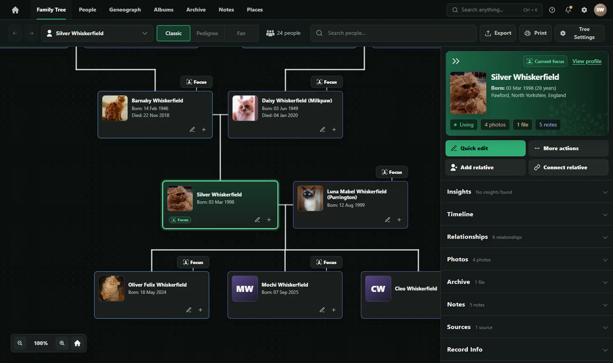
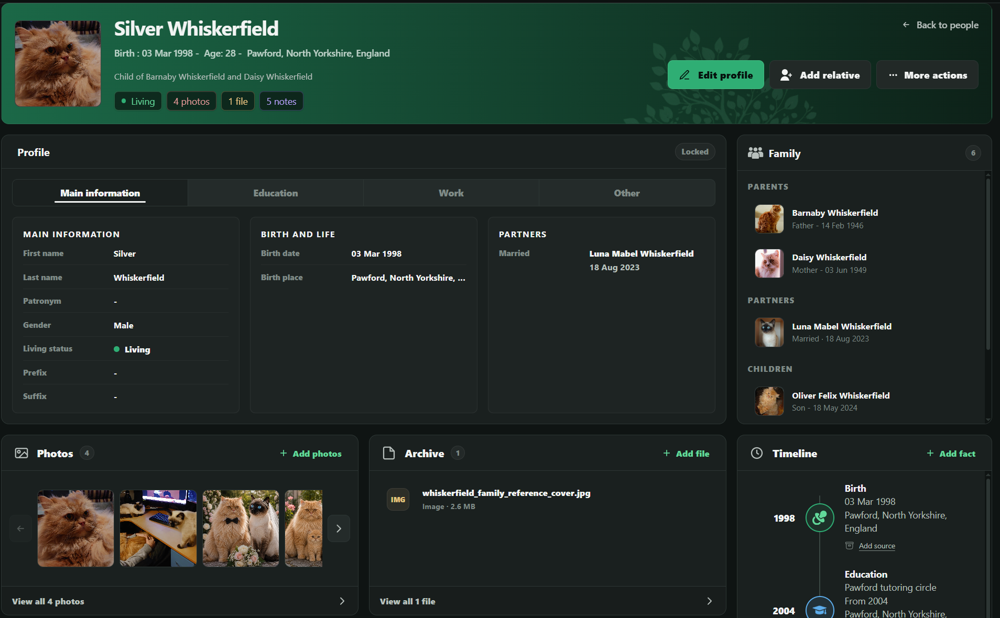
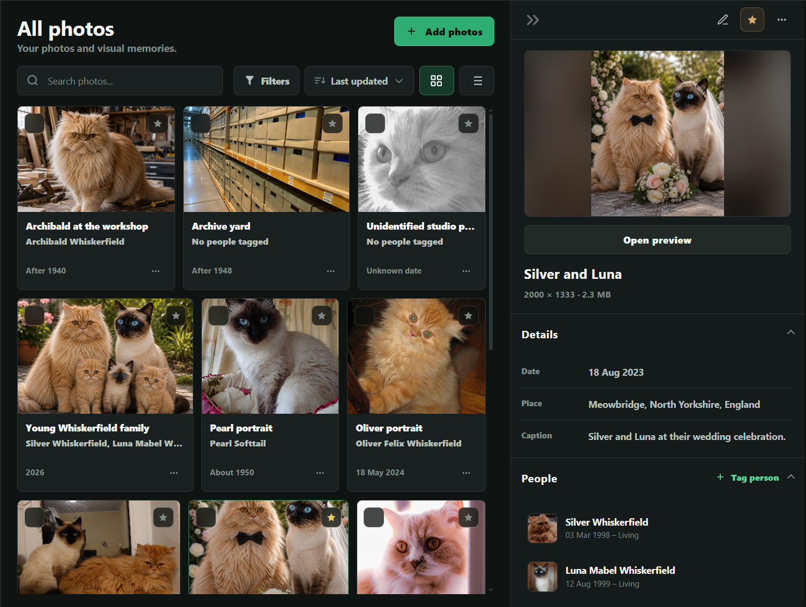
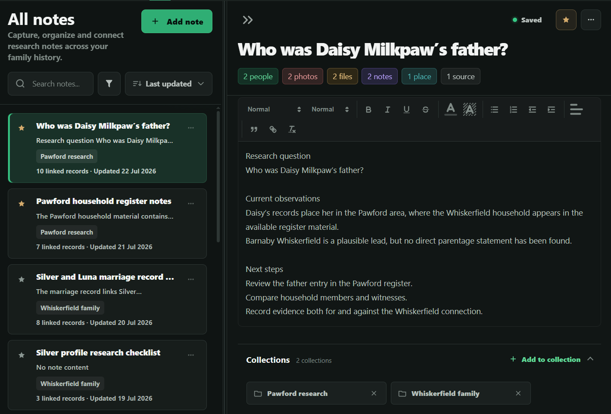
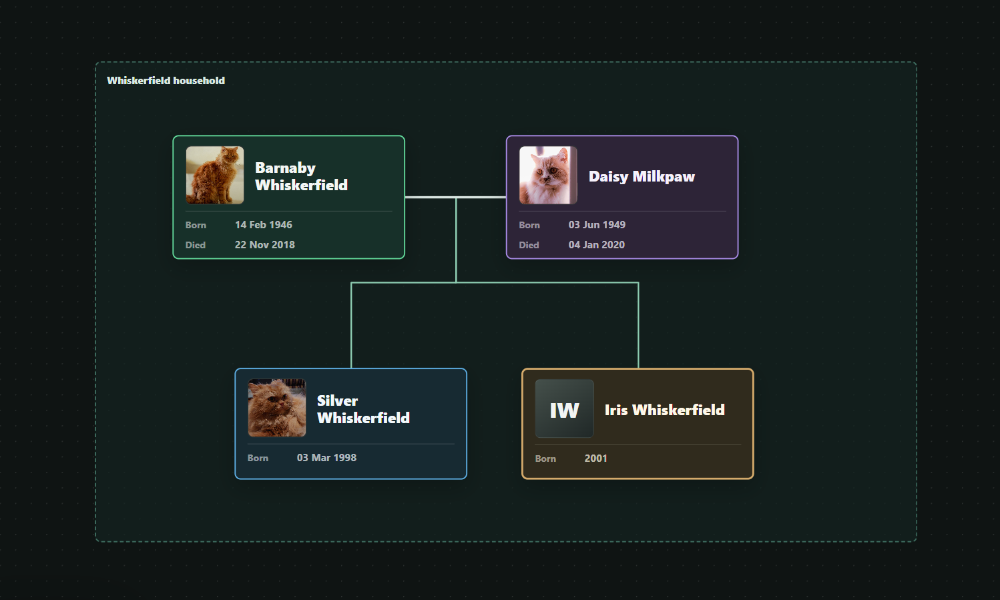

01 / Архив
Документ на своём месте.
Свидетельство о браке из Мяубриджа хранится среди семейных документов проекта. Оно связано с людьми и другими материалами исследования.

GeneoGraph объединяет семейное дерево, людей, фотографии, документы, заметки, места и инструменты визуализации в одном рабочем пространстве. Меньше времени на разрозненные инструменты — больше на историю вашей семьи.

В дереве Сильвер показан рядом с родителями, Луной и их детьми. Откройте его профиль, чтобы увидеть даты, родственников и связанные фотографии, файлы и заметки. Дерево остаётся наглядным, а подробности исследования всегда под рукой.


Сканы лежат в одной папке, семейные фотографии — в другой, исследовательские вопросы разбросаны по заметкам. Легко потерять уже найденное. В GeneoGraph у каждого материала есть своё место: файлы и источники — в Архиве, снимки — в Альбомах, рабочие мысли — в Заметках. И всё это в одном проекте.
Свидетельство о браке из Мяубриджа хранится среди семейных документов проекта. Оно связано с людьми и другими материалами исследования.

Фотография Сильвера и Луны находится в Альбомах вместе с датой, местом съёмки — Мяубриджем — и отметками людей на снимке.

Заметка Дейзи посвящена вопросу о её отце. Барнаби Вискерфильд указан как возможный, а не установленный отец. Наблюдения, связанные материалы и следующие шаги собраны вместе.

В Архиве, Альбомах и Заметках разные материалы хранятся на своих местах. Свяжите их с человеком — и семейную фотографию и рабочие заметки можно будет найти прямо из его записи в дереве, не перемещая сами материалы.
Связи работают в обе стороны: в файле тоже можно указать относящихся к нему людей или события, чтобы документ не терял семейный контекст.
Родился 3 марта 1998 года в Поуфорде
Барнаби и Дейзи — его родители. Луна — его жена.
Материалы, связанные с Сильвером
Начните с человека или материала: связь поможет увидеть их общий контекст.
Возьмите людей из проекта и свободно расположите их вместе с фотографиями, местами и исследовательскими заметками. Создайте доску, которая объяснит сложную ветвь, добавит контекст к семейной истории или покажет семью так, как не позволяет обычное дерево.

Перемещайте и группируйте людей из проекта, размещайте фотографии, текст и исследовательский контекст там, где они помогают понять историю семьи. На доске можно создать представление, недоступное в жёсткой структуре дерева.
Добавьте на доску предполагаемого человека или возможную связь вместе с поясняющей заметкой, не превращая гипотезу в установленный факт семейного дерева.
Просматривайте связи и открывайте подробности о каждом человеке.
Храните документы, фотографии и рабочие мысли там, где им место.
Переходите между связанными материалами одного проекта.
Создавайте семейные схемы или исследуйте возможные ветви.
Направление развития GeneoGraph — локальные проекты и портативные данные. Будущие онлайн-сервисы станут дополнительной возможностью, а не обязательным условием работы с программой.
Откройте пример проекта Вискерфильд и попробуйте пройти путь исследователя. Найдите Сильвера в семейном дереве, изучите материалы о его семье, а затем откройте холст Генеографа и оформите его на свой вкус. Увидьте, как части проекта работают вместе.
Изучить пример проектаПерейдите от карточки в семейном дереве к полному профилю.
Найдите семейную фотографию в Альбомах, свидетельство о браке в Архиве и рабочую заметку в Заметках.
Откройте доску семьи Вискерфильд в модуле Генеограф и изучите возможную ветвь.
Создайте холст в модуле Генеограф, расположите на нем людей из проекта и добавьте свой контекст.
При перезагрузке страницы изменения в демо сбрасываются; данные не сохраняются.
Создан на основе реального генеалогического исследования.
Идея проекта GeneoGraph возникла из личной исследовательской работы по истории семьи и попыток сохранить связь между людьми, документами, заметками и открытыми вопросами. Присоединяйтесь к исследовательской группе, чтобы получать новости о разработке, тестировать новые возможности и делиться отзывами.